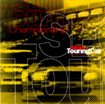

ＳＴＣミュージックＣＤ発売中！
|  Listen |
ＳＴＣのミュージックＣＤが１０月１７日にＭＭＶレーベルより発売されます。 サターン版ＢＧＭをベースに、ミュージシャン本人がＣＤ用にアレンジした１６曲を収録。 （「たっぷり聞けるように尺を長めにした」というアレンジであり、ほとんどサターン版ＢＧＭの音使いそのままです。） avex trax、ＴＲＡＮＣＥ、ＳＥＧＡという３ジャンルクロスオーバーのコンピレーションアルバムです。 初回プレスのみＳＴＣがちょっと遊べる体験版つきです。 （操作感・完成度はゲーム製品版と多少異なります。） |
| SEGA Touring Car Championship | |
| 定価 | ￥2,625（税込） |
| 品番 | MJCA-00002 |
| 発売元 | （株）マーベラス・エンターテイメント |
| 販売元 | （株）ポニーキャニオン |

|

|